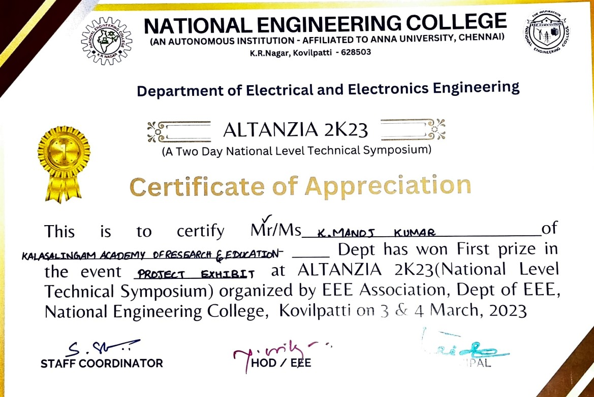
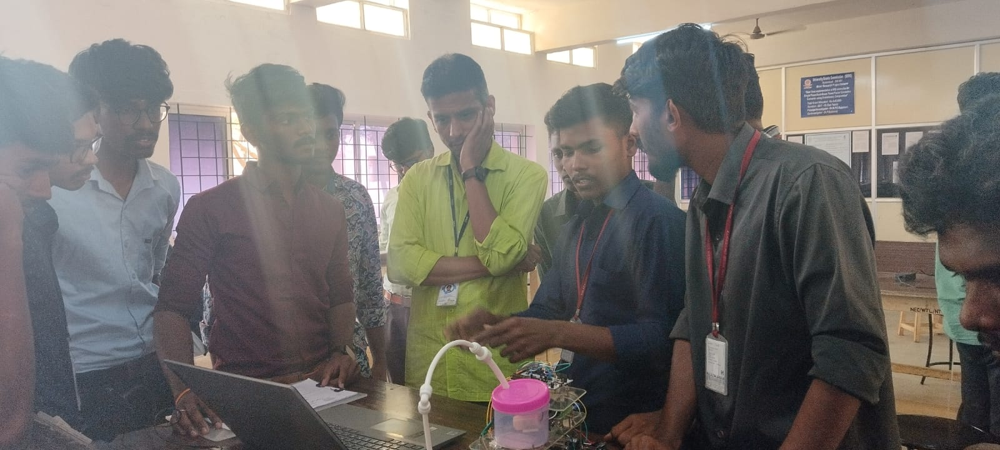

Hi Welcome I'm Manoj Kumar
Software Developer
Expert in optimization & multiplayer. Skilled in Full-stack Development.
Here are some of the projects I have worked on
Game Developer Projects @ Pearl Lemon, London | 07/2024 – Present
- Developed a physics-based shooting system, increasing player engagement by 40%
- Integrated multiplayer networking using Remote Events for real-time gameplay.
- Designed progressive difficulty levels, boosting the retention rate by 30%.
- Conducted rigorous performance debugging to optimize game response times.
- Designed and implemented core game mechanics, including physics-based ball shooting and character animations, using Lua scripting.
- Integrated Remote Events for seamless client-server communication and multiplayer gameplay.
- Developed progressive difficulty levels to enhance player challenge and engagement.
- Conducted rigorous testing and debugging to ensure smooth performance across devices.
- Collaborated with cross-functional teams to refine gameplay mechanics and visual elements.
- Optimized game performance by addressing latency and improving rendering efficiency.
- Created interactive 3D environments, enhancing the game's visual appeal and player immersion.
- Maintained documentation of game logic and development workflows for knowledge sharing.
-
Tools & Technologies Used:
- Programming Language: Lua, full-stack
- Game Development Platform: Roblox Studio.
- Collaboration: Version control (Git), Agile development practices.
- Testing & Debugging: Roblox Developer Console, in-game analytics.
- Designed and implemented gameplay mechanics, including spaceship movement, enemy AI, shooting mechanics, and projectile interactions.
- Handled level progression by increasing enemy difficulty with each level, ensuring a challenging experience for players.
Development
- Implemented local and server-based score storage using PHP to track and save player progress.
- Integrated game over and retry functionality, allowing players to attempt higher scores with each new playthrough.
Score and Leaderboard Management
- Developed a responsive game interface with a dynamic canvas to display game graphics
- Enabled user controls via both buttons and keyboard events for spaceship movement (left and right) and shooting
- Displayed key game statistics, such as score, current level, and remaining lives, for better player engagement.
UI/UX
-
Tools & Technologies Used:
- Frontend: HTML, CSS, JavaScript (for game logic, rendering, and interactivity).
- Backend: PHP (for leaderboard data management and score submission).
- Integrated Development Environments (IDEs): Visual Studio.
- Version Control: GitHub (for version control and project collaboration).
1. Rosa Lila Land - Basketball Shooting Game (Roblox)
Led the development of an engaging basketball game on the Roblox platform, leveraging Lua scripting and Roblox Studio tools. Created immersive gameplay experiences featuring realistic physics, multiplayer support, and progressive difficulty levels. The game successfully increased player engagement and retention, showcasing technical expertise and creative problem-solving.
2. AIRALO – Beat Bill Shock
The "AIRALO - BeatBillShock" project is a browser-based game where players navigate a spaceship through various levels. Players must avoid enemies, shoot at them, and collect coins to score points. The game increases in difficulty with each level, as enemies become more challenging. The goal is to advance through levels, defeat enemies, and rack up a high score, which is recorded on a live leaderboard.
3. Grass Lands (Unity)
A 2D game developed in Unity, featuring immersive environments, character interactions, and dynamic animations. The project follows Agile methodology, ensuring iterative development and efficient team collaboration.
- Designed and implemented core gameplay mechanics using C# in Unity.
- Integrated animations to enhance character movements and environmental elements.
- Optimized game performance by managing assets and reducing unnecessary computations.
Development
- Designed and implemented the Main Menu with intuitive navigation for a seamless user experience.
- Developed a Retry Game screen with smooth transitions, allowing players to restart quickly.
- Ensured responsive UI elements for different screen sizes and resolutions.
- Used Unity’s Canvas System and UI Toolkit to create interactive buttons and menus.
UI/UX
-
Tools & Technologies Used:
- Game Engine: Unity
- Programming Language: C#
- Integrated Development Environments (IDEs): Visual Studio.
- Version Control: GitHub (for version control and project collaboration).
- Project Management: Agile methodology (Scrum)
- UI Frameworks: Unity UI Toolkit, Canvas System
Final Year Project
4. DESIGN AND DEVELOPMENT OF VISION BASED IBOT
The main objective of the proposed system is used to cleaning the floor in an automated manner, It continuously observes all the parameters to clean the particular area or road, based upon the level of hygiene, the number of cycles and number of rotations are performed, these smart automated floor cleaner has implemented with the aid of motor and sucking pump, embedded sensor and control units.
First Prize Winning Certificate
- Led the creation of a smart cleaning robot using Java, Data JPA, SQL, Servlets, and JSP.
- Made it clean corners efficiently by using smart programming techniques.
- Added sensors to help it detect obstacles for better navigation.
- Enabled it to recognize voice commands for automatic cleaning.
Role: Team Lead.
- Java (Core & Advanced)
- Java Servlets & JSP
- Spring Data JPA
Programming Languages & Frameworks:
- SQL (for data storage and retrieval)
- Data JPA (for managing database interactions)
Represented My University at National Engineering college for Project competitions and Got a First Prize to my University.
Database & Backend:
I am presenting and deeply explaining my project to the NEC professor.
Prize Taking From NEC
.jpeg)
Community Service Project
5. Density-Based Traffic Signal System
The prototype model was build using IR sensors . IR sensors is used to measure the density of traffic present in a particular road. IR sensors are placed on each road in perfect manner to detect the density of traffic correctly; these IR sensors always sense the traffic present on that particular road. All of the sensors are/is connected to arduino. Based on these IR sensors,the controller detects the traffic and then controls the Signal system. The controls of traffic light depend on density of vehicles available in the road .
- IR sensors accurately measure traffic density on each road.
- Sensors send real-time data to the Arduino controller.
- Traffic signals are dynamically adjusted based on vehicle density.
- Optimizes traffic flow, reducing congestion and wait times.
Key Features:
- Embedded C (for Arduino programming)
- Python (for data processing and visualization)
Programming Languages & Frameworks:
- Arduino IDE (for coding and testing)
- Proteus (for circuit simulation)
- MATLAB (for data analysis and optimization)